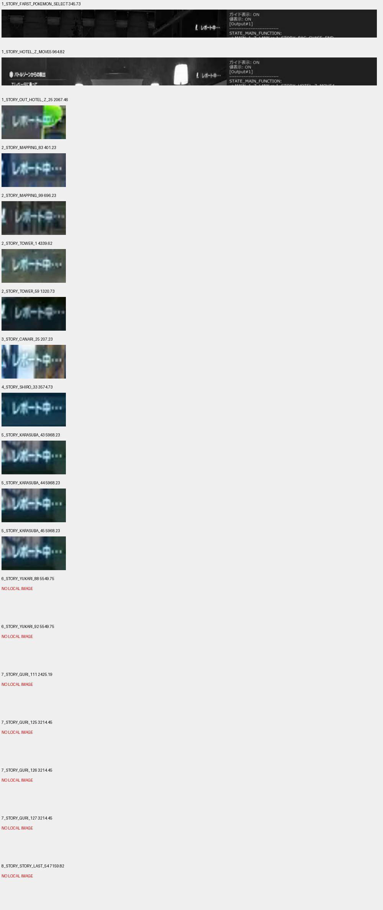

1_STORY_HOTEL_Z_MOVE5の通常A失敗／初回ResetDebugの復帰先を1_STORY_FAST_ELEVATORから1_STORY_HOTEL_Z_MOVE4へ修正。ロビーでレポート中を確認。保存位置はエレベーターへの接近・A入力より前のため、MOVE4から乗車操作を再実行する。FAST_ELEVATORからではロビーのIN_ICONで即MOVE5へ進み、廊下を客室と取り違える。
ZIPのMOVE7はベッド前の客室。今回の実行は廊下でMOVE7となり、リセット後はロビーだった。客室用MOVE7の向きは変更せず、ロビーからの乗車処理を補う。ロビーの保存表示 / 客室のMOVE7。
移動A復旧191件のうちゲームリセット83件を既存保存証跡・現ソースと照合。別途、保存段階の既存268設定は復帰先・前処理が一致。追加の誤りは確認できなかった。全動画を今回新たに全フレーム確認したという意味ではない。
修正対象16テスト成功。拡張135テストのホテル既存fixtureエラー55件は変更前でも同数再現。必須全体878件は既知19 failures / 8 errors / 1 skipで、直前結果から診断名の追加・解消なし。
Origin・stock・配布ZIP・clean DevStudio文書・共通断片を同期。実機ロードは未確認。Commands停止 → F5 Reload → ロビーから1_STORY_HOTEL_Z_MOVE4で再開。
今回の照合・検証記録。以下の旧検証記録に対し、今回の修正は本節を優先。
YUKARI_64, YUKARI_68, YUKARI_72, YUKARI_76, YUKARI_80, YUKARI_84, YUKARI_88, YUKARI_92 のA表示チェックは通常・補完とも一時無効。A入力と既存の連戦処理を維持。以下の以前のAチェック一覧より、この変更を優先する。
前回の復旧未確定13か所は10追加・2一時除外・1未確定。共通回復10か所も追加し、A復旧登録は191 Step。動画・復旧先・残件の最新一覧を参照。
2026-10-25T18:50:14+09:00
復旧表 191 Step、ローカル復旧 4 状態。すでに個別復旧するマップ登録処理も保持。未確定 1 Step は下記。
QUASAR_MOVE_ENTRANCE。ZIPの保存フレーム・実行位置索引に、この内側の分岐の実行記録が見つからない。入口手前のQUASAR_MOVE_DOORとは別で、内側からどこへ戻せるか、リセット後の位置を今回の資料では確定できていない。Aチェック自体は残し、復旧先を推測で設定していない。
今回の確認対象で、既存の個別復旧も含めてなお戻り先を確定できていないA処理は上記。YUKARIの8か所はユーザー指定による一時無効として別扱いにしている。
| 失敗したStep | 復旧 | ZIP動画の確認 |
|---|---|---|
| TOWER_44／46 | ゲームリセット成功後にTOWER_44 | 1:37:47 セーブ表示。出口失敗を、屋外の古い移動起点へ戻さない。 |
| OUT_HOTEL_Z_39／40 | 既存WANINOKO_SKILL_CHANGE3 | 42:32 セーブ表示 |
| HOTEL_Z_MOVE5 | ゲームリセット後FAST_ELEVATORで表示を確認 | 16:04 セーブ表示 |
| TOWER_1 | ゲームリセット後TOWER_1 | 1:12:19 セーブ表示 |
セーブ表示はZIP内リンクの以前の動画監査で保存した画像も再確認。全復旧経路を今回ゲームで再現したものではありません。

| 関数／A | 理由 |
|---|---|
_1_story_out_hotel_z_62 #1 | 以前のZIP動画観察でAの画角未確認／探索範囲外 |
_1_story_out_hotel_z_68 #1 | 以前のZIP動画観察でAの画角未確認／探索範囲外 |
_1_story_out_hotel_z_72 #1 | 以前のZIP動画観察でAの画角未確認／探索範囲外 |
_2_story_tower_11 #1 | 以前のZIP動画観察でAの画角未確認／探索範囲外 |
_2_story_tower_46 #1 | 以前のZIP動画観察でAの画角未確認／探索範囲外 |
_2_story_tower_56 #1 | 以前のZIP動画観察でAの画角未確認／探索範囲外 |
_2_story_absol_move27 #1 | 以前のZIP動画観察でAの画角未確認／探索範囲外 |
_3_story_canari_2_recovery3 #1 | 以前のZIP動画観察でAの画角未確認／探索範囲外 |
_3_story_canari_9 #1 | 以前のZIP動画観察でAの画角未確認／探索範囲外 |
_4_story_shiro_23 #1 | 以前のZIP動画観察でAの画角未確認／探索範囲外 |
_4_story_shiro_45 #1 | 以前のZIP動画観察でAの画角未確認／探索範囲外 |
_4_story_shiro_63 #1 | 以前のZIP動画観察でAの画角未確認／探索範囲外 |
_5_story_karasuba_23 #2 | 以前のZIP動画観察でAの画角未確認／探索範囲外 |
_5_story_karasuba_23 #1 | 以前のZIP動画観察でAの画角未確認／探索範囲外 |
_5_story_karasuba_43 #1 | 以前のZIP動画観察でAの画角未確認／探索範囲外 |
_5_story_karasuba_44 #1 | 以前のZIP動画観察でAの画角未確認／探索範囲外 |
_5_story_karasuba_71 #1 | 以前のZIP動画観察でAの画角未確認／探索範囲外 |
_5_story_karasuba_97 #1 | 以前のZIP動画観察でAの画角未確認／探索範囲外 |
_6_story_yukari_3 #1 | 以前のZIP動画観察でAの画角未確認／探索範囲外 |
_6_story_yukari_21 #1 | 以前のZIP動画観察でAの画角未確認／探索範囲外 |
_6_story_yukari_37 #1 | 以前のZIP動画観察でAの画角未確認／探索範囲外 |
_6_story_yukari_38 #1 | 以前のZIP動画観察でAの画角未確認／探索範囲外 |
_6_story_yukari_50 #2 | 以前のZIP動画観察でAの画角未確認／探索範囲外 |
_6_story_yukari_50 #1 | 以前のZIP動画観察でAの画角未確認／探索範囲外 |
_6_story_yukari_76 #1 | 以前のZIP動画観察でAの画角未確認／探索範囲外 |
_6_story_yukari_84 #1 | 以前のZIP動画観察でAの画角未確認／探索範囲外 |
_6_story_yukari_88 #1 | 以前のZIP動画観察でAの画角未確認／探索範囲外 |
_7_story_guri_42 #1 | 以前のZIP動画観察でAの画角未確認／探索範囲外 |
_7_story_guri_49 #1 | 以前のZIP動画観察でAの画角未確認／探索範囲外 |
_7_story_guri_66 #1 | 以前のZIP動画観察でAの画角未確認／探索範囲外 |
_7_story_guri_73 #1 | 以前のZIP動画観察でAの画角未確認／探索範囲外 |
_7_story_guri_81 #1 | 以前のZIP動画観察でAの画角未確認／探索範囲外 |
_7_story_guri_83 #1 | 以前のZIP動画観察でAの画角未確認／探索範囲外 |
_7_story_guri_92 #1 | 以前のZIP動画観察でAの画角未確認／探索範囲外 |
_7_story_guri_95 #1 | 以前のZIP動画観察でAの画角未確認／探索範囲外 |
_7_story_guri_102 #1 | 以前のZIP動画観察でAの画角未確認／探索範囲外 |
_7_story_guri_119 #1 | 以前のZIP動画観察でAの画角未確認／探索範囲外 |
_7_story_guri_126 #1 | 以前のZIP動画観察でAの画角未確認／探索範囲外 |
_7_story_guri_127 #1 | 以前のZIP動画観察でAの画角未確認／探索範囲外 |
_7_story_guri_131 #1 | 以前のZIP動画観察でAの画角未確認／探索範囲外 |
_7_story_guri_132 #1 | 以前のZIP動画観察でAの画角未確認／探索範囲外 |
_7_story_guri_138 #1 | 以前のZIP動画観察でAの画角未確認／探索範囲外 |
_8_story_story_last_4 #1 | 以前のZIP動画観察でAの画角未確認／探索範囲外 |
_8_story_story_last_26 #3 | 以前のZIP動画観察でAの画角未確認／探索範囲外 |
_8_story_story_last_26 #2 | 以前のZIP動画観察でAの画角未確認／探索範囲外 |
ZA_bench_change_time #1 | 以前のZIP動画観察でAの画角未確認／探索範囲外 |
ZA_story_furadari_lab_entrance_goto #1 | ZIPに該当分岐の実行記録がなく画角未確認 |
ZA_story_furadari_black_comment_recovery_step #1 | ZIPに該当分岐の実行記録がなく画角未確認 |
_2_story_tower_59 #1 | ZIPに該当分岐の実行記録がなく画角未確認 |
_2_story_tower_78 #1 | ZIPに該当分岐の実行記録がなく画角未確認 |
_2_story_absol_move22 #1 | ZIPに該当分岐の実行記録がなく画角未確認 |
_3_story_canari_1 #1 | ZIPに該当分岐の実行記録がなく画角未確認 |
_3_story_canari_2 #1 | ZIPに該当分岐の実行記録がなく画角未確認 |
_3_story_canari_23 #1 | ZIPに該当分岐の実行記録がなく画角未確認 |
_4_story_shiro_72 #1 | ZIPに該当分岐の実行記録がなく画角未確認 |
_5_story_karasuba_17 #1 | ZIPに該当分岐の実行記録がなく画角未確認 |
_5_story_karasuba_45 #1 | ZIPに該当分岐の実行記録がなく画角未確認 |
_5_story_karasuba_115 #1 | ZIPに該当分岐の実行記録がなく画角未確認 |
ZA_quasar_move_door #1 | ZIPに該当分岐の実行記録がなく画角未確認 |
ZA_quasar_move_entrance #1 | ZIPに該当分岐の実行記録がなく画角未確認 |
Z_40の最初のA前にもLを追加。途中の探索の待機時間は増やしません。
| A処理のStep | 復旧先 | 方法 | 初回確認の共有単位 | 根拠 |
|---|---|---|---|---|
1_STORY_FARST_POKEMON_SELECT | 1_STORY_FARST_POKEMON_SELECT | ゲームリセット → 保存起点 | 1_STORY_FARST_POKEMON_SELECT | ZIP verified save before origin 参照動画 |
1_STORY_HOTEL_Z_MOVE11 | 1_STORY_HOTEL_Z_MOVE11 | ゲームリセット → 保存起点 | 1_STORY_HOTEL_Z_MOVE12 | 現コードの既存復旧・保存起点を使用 |
1_STORY_HOTEL_Z_MOVE12 | 1_STORY_HOTEL_Z_MOVE11 | ゲームリセット → 保存起点 | 1_STORY_HOTEL_Z_MOVE12 | 現コードの既存復旧・保存起点を使用 |
1_STORY_HOTEL_Z_MOVE13 | 1_STORY_HOTEL_Z_MOVE13 | ゲームリセット → 保存起点 | 1_STORY_HOTEL_Z_MOVE15 | 現コードの既存復旧・保存起点を使用 |
1_STORY_HOTEL_Z_MOVE14 | 1_STORY_HOTEL_Z_MOVE13 | ゲームリセット → 保存起点 | 1_STORY_HOTEL_Z_MOVE15 | 現コードの既存復旧・保存起点を使用 |
1_STORY_HOTEL_Z_MOVE3 | 1_STORY_HOTEL_Z_MOVE3 | ゲームリセット → 保存起点 | 1_STORY_AZ_CHAT | 現コードの既存復旧・保存起点を使用 |
1_STORY_HOTEL_Z_MOVE4 | 1_STORY_HOTEL_Z_MOVE4 | ゲームリセット → 保存起点 | 1_STORY_FAST_ELEVATOR | 現コードの既存復旧・保存起点を使用 |
1_STORY_HOTEL_Z_MOVE5 | 1_STORY_HOTEL_Z_MOVE4 | ゲームリセット → 保存起点 | 1_STORY_FAST_ELEVATOR | ロビーでレポート中を確認。保存位置はエレベーターへの接近・A入力より前のため、MOVE4から乗車操作を再実行する。FAST_ELEVATORからではロビーのIN_ICONで即MOVE5へ進み、廊下を客室と取り違える。 参照動画 |
1_STORY_HOTEL_Z_MOVE7 | 1_STORY_HOTEL_Z_MOVE7 | ゲームリセット → 保存起点 | 1_STORY_HOTEL_Z_MOVE8 | 現コードの既存復旧・保存起点を使用 |
1_STORY_HOTEL_Z_MOVE9 | 1_STORY_HOTEL_Z_MOVE9 | ゲームリセット → 保存起点 | 1_STORY_HOTEL_Z_MOVE10 | 現コードの既存復旧・保存起点を使用 |
1_STORY_OUT_HOTEL_Z_10 | 1_STORY_WANINOKO_SKILL_CHANGE1 | ゲームリセット → 保存起点 | 1_STORY_OUT_HOTEL_Z_11 | 現コードの既存復旧・保存起点を使用 |
1_STORY_OUT_HOTEL_Z_25 | 1_STORY_OUT_HOTEL_Z_20_1 | ゲームリセット → 保存起点 | 1_STORY_OUT_HOTEL_Z_20_1 | ZIP save label reviewed; retry from following anchored/recognised origin 参照動画 |
1_STORY_OUT_HOTEL_Z_27 | 1_STORY_OUT_HOTEL_Z_27 | ゲームリセット → 保存起点 | 1_STORY_OUT_HOTEL_Z_28 | 現コードの既存復旧・保存起点を使用 |
1_STORY_OUT_HOTEL_Z_35 | 1_STORY_OUT_HOTEL_Z_35 | ゲームリセット → 保存起点 | 1_STORY_OUT_HOTEL_Z_37 | 現コードの既存復旧・保存起点を使用 |
1_STORY_OUT_HOTEL_Z_37 | 1_STORY_OUT_HOTEL_Z_35 | ゲームリセット → 保存起点 | 1_STORY_OUT_HOTEL_Z_37 | 現コードの既存復旧・保存起点を使用 |
1_STORY_OUT_HOTEL_Z_39 | 1_STORY_WANINOKO_SKILL_CHANGE3 | ゲームリセット → 保存起点 | 1_STORY_WANINOKO_SKILL_CHANGE3 | ZIP 22Lc8za8OfQ 2552.733 save before skill_change3; existing Z_40 recovery |
1_STORY_OUT_HOTEL_Z_40 | 1_STORY_WANINOKO_SKILL_CHANGE3 | ゲームリセット → 保存起点 | 1_STORY_OUT_HOTEL_Z_40 | existing Z_40 verified recovery |
1_STORY_OUT_HOTEL_Z_48 | 1_STORY_OUT_HOTEL_Z_48 | ゲームリセット → 保存起点 | 1_STORY_OUT_HOTEL_Z_50 | 現コードの既存復旧・保存起点を使用 |
1_STORY_OUT_HOTEL_Z_49 | 1_STORY_OUT_HOTEL_Z_48 | ゲームリセット → 保存起点 | 1_STORY_OUT_HOTEL_Z_50 | 現コードの既存復旧・保存起点を使用 |
1_STORY_OUT_HOTEL_Z_51 | 1_STORY_OUT_HOTEL_Z_51 | ゲームリセット → 保存起点 | 1_STORY_OUT_HOTEL_Z_52 | 現コードの既存復旧・保存起点を使用 |
1_STORY_OUT_HOTEL_Z_6 | 1_STORY_OUT_HOTEL_Z_6 | ゲームリセット → 保存起点 | 1_STORY_OUT_HOTEL_Z_7 | 現コードの既存復旧・保存起点を使用 |
1_STORY_OUT_HOTEL_Z_62 | 1_STORY_OUT_HOTEL_Z_61 | goto等の既存起点へ戻る | 1_STORY_OUT_HOTEL_Z_63 | 現コードの既存復旧・保存起点を使用 |
1_STORY_OUT_HOTEL_Z_68 | 1_STORY_OUT_HOTEL_Z_67 | ゲームリセット → 保存起点 | 1_STORY_OUT_HOTEL_Z_69 | 現コードの既存復旧・保存起点を使用 |
1_STORY_OUT_HOTEL_Z_72 | 1_STORY_OUT_HOTEL_Z_67 | ゲームリセット → 保存起点 | 1_STORY_OUT_HOTEL_Z_73 | 現コードの既存復旧・保存起点を使用 |
1_STORY_OUT_HOTEL_Z_78 | 1_STORY_OUT_HOTEL_Z_77 | goto等の既存起点へ戻る | 1_STORY_OUT_HOTEL_Z_78 | 現コードの既存復旧・保存起点を使用 |
1_STORY_OUT_HOTEL_Z_80 | 1_STORY_OUT_HOTEL_Z_79 | goto等の既存起点へ戻る | 1_STORY_OUT_HOTEL_Z_81 | 現コードの既存復旧・保存起点を使用 |
1_STORY_OUT_HOTEL_Z_82 | 1_STORY_OUT_HOTEL_Z_82 | ゲームリセット → 保存起点 | 1_STORY_OUT_HOTEL_Z_83 | 現コードの既存復旧・保存起点を使用 |
2_STORY_ABSOL_MOVE16 | 2_STORY_ABSOL_MOVE14 | goto等の既存起点へ戻る | 2_STORY_ABSOL_MOVE17 | 現コードの既存復旧・保存起点を使用 |
2_STORY_ABSOL_MOVE21 | 2_STORY_ABSOL_MOVE21 | ゲームリセット → 保存起点 | 2_STORY_ABSOL_MOVE22 | 現コードの既存復旧・保存起点を使用 |
2_STORY_ABSOL_MOVE22 | 2_STORY_ABSOL_MOVE21 | ゲームリセット → 保存起点 | 2_STORY_ABSOL_MOVE22 | existing white-comment reset to saved ABSOL21; do not teleport from inside |
2_STORY_ABSOL_MOVE23 | 2_STORY_ABSOL_MOVE23 | ゲームリセット → 保存起点 | 2_STORY_ABSOL_MOVE24 | 現コードの既存復旧・保存起点を使用 |
2_STORY_ABSOL_MOVE25 | 2_STORY_ABSOL_MOVE23 | ゲームリセット → 保存起点 | 2_STORY_ABSOL_MOVE24 | 現コードの既存復旧・保存起点を使用 |
2_STORY_ABSOL_MOVE27 | 2_STORY_ABSOL_MOVE23 | ゲームリセット → 保存起点 | 2_STORY_ABSOL_MOVE24 | 現コードの既存復旧・保存起点を使用 |
2_STORY_ABSOL_MOVE33 | 2_STORY_ABSOL_MOVE32 | goto等の既存起点へ戻る | None | goto／ベンチから途中に入場Aのない経路を照合 |
2_STORY_ABSOL_MOVE34 | 2_STORY_ABSOL_MOVE32 | goto等の既存起点へ戻る | 2_STORY_ABSOL_MOVE35 | 現コードの既存復旧・保存起点を使用 |
2_STORY_ABSOL_MOVE37 | 2_STORY_ABSOL_MOVE36 | goto等の既存起点へ戻る | 2_STORY_ABSOL_MOVE38 | 現コードの既存復旧・保存起点を使用 |
2_STORY_ABSOL_MOVE38 | 2_STORY_ABSOL_MOVE36 | goto等の既存起点へ戻る | 2_STORY_ABSOL_MOVE38 | 現コードの既存復旧・保存起点を使用 |
2_STORY_ABSOL_MOVE4 | 2_STORY_ABSOL_MOVE4 | ゲームリセット → 保存起点 | 2_STORY_ABSOL_MOVE6 | 現コードの既存復旧・保存起点を使用 |
2_STORY_ABSOL_MOVE5 | 2_STORY_ABSOL_MOVE4 | ゲームリセット → 保存起点 | 2_STORY_ABSOL_MOVE6 | 現コードの既存復旧・保存起点を使用 |
2_STORY_MAPPING_105 | 2_STORY_MAPPING_104 | goto等の既存起点へ戻る | None | goto／ベンチから途中に入場Aのない経路を照合 |
2_STORY_MAPPING_112 | 2_STORY_MAPPING_111 | goto等の既存起点へ戻る | None | goto／ベンチから途中に入場Aのない経路を照合 |
2_STORY_MAPPING_114_1 | 2_STORY_MAPPING_114 | goto等の既存起点へ戻る | None | goto／ベンチから途中に入場Aのない経路を照合 |
2_STORY_MAPPING_116_1 | 2_STORY_MAPPING_116 | goto等の既存起点へ戻る | None | goto／ベンチから途中に入場Aのない経路を照合 |
2_STORY_MAPPING_2 | 2_STORY_MAPPING_1 | goto等の既存起点へ戻る | None | goto／ベンチから途中に入場Aのない経路を照合 |
2_STORY_MAPPING_38 | 2_STORY_MAPPING_37 | goto等の既存起点へ戻る | None | goto／ベンチから途中に入場Aのない経路を照合 |
2_STORY_MAPPING_41 | 2_STORY_MAPPING_40 | goto等の既存起点へ戻る | None | goto／ベンチから途中に入場Aのない経路を照合 |
2_STORY_MAPPING_44 | 2_STORY_MAPPING_43 | goto等の既存起点へ戻る | None | goto／ベンチから途中に入場Aのない経路を照合 |
2_STORY_MAPPING_77 | 2_STORY_MAPPING_76 | goto等の既存起点へ戻る | None | goto／ベンチから途中に入場Aのない経路を照合 |
2_STORY_MAPPING_8 | 2_STORY_MAPPING_7 | goto等の既存起点へ戻る | None | goto／ベンチから途中に入場Aのない経路を照合 |
2_STORY_MAPPING_80 | 2_STORY_MAPPING_79 | goto等の既存起点へ戻る | None | goto／ベンチから途中に入場Aのない経路を照合 |
2_STORY_MAPPING_81_0 | 2_STORY_MAPPING_79 | ゲームリセット → 保存起点 | 2_STORY_MAPPING_81_0 | 6:41の屋外保存位置から79のgotoで美術館入口を取り直す。退出待ち状態も初期化する。 参照動画 |
2_STORY_MAPPING_92 | 2_STORY_MAPPING_91 | goto等の既存起点へ戻る | None | goto／ベンチから途中に入場Aのない経路を照合 |
2_STORY_MAPPING_96 | 2_STORY_MAPPING_95 | goto等の既存起点へ戻る | None | goto／ベンチから途中に入場Aのない経路を照合 |
2_STORY_MEGA_MOVE13 | 2_STORY_MEGA_MOVE13 | ゲームリセット → 保存起点 | 2_STORY_MEGA_MOVE14 | 現コードの既存復旧・保存起点を使用 |
2_STORY_TOWER_1 | 2_STORY_TOWER_1 | ゲームリセット → 保存起点 | 2_STORY_TOWER_1 | ZIP save label reviewed; retry from following anchored/recognised origin 参照動画 |
2_STORY_TOWER_11 | 2_STORY_TOWER_11 | ゲームリセット → 保存起点 | 2_STORY_TOWER_12 | 現コードの既存復旧・保存起点を使用 |
2_STORY_TOWER_3 | 2_STORY_TOWER_2 | goto等の既存起点へ戻る | 2_STORY_TOWER_4 | 現コードの既存復旧・保存起点を使用 |
2_STORY_TOWER_31 | 2_STORY_TOWER_30 | goto等の既存起点へ戻る | 2_STORY_TOWER_31 | 共通ポケモン回復の呼出し元。直前のポケモンセンターgotoから受付までに入場Aはない。A失敗時はこのgotoで位置を取り直す。ZIP参照時刻は該当Step開始であり保存表示の時刻ではない。 参照動画 |
2_STORY_TOWER_33 | 2_STORY_TOWER_32 | goto等の既存起点へ戻る | 2_STORY_TOWER_34 | 現コードの既存復旧・保存起点を使用 |
2_STORY_TOWER_42 | 2_STORY_TOWER_42 | ゲームリセット → 保存起点 | 2_STORY_TOWER_43 | 現コードの既存復旧・保存起点を使用 |
2_STORY_TOWER_44 | 2_STORY_TOWER_44 | ゲームリセット → 保存起点 | 2_STORY_TOWER_44 | ZIP 22Lc8za8OfQ 5867.233 save, TOWER_44 entry 5868.889511 |
2_STORY_TOWER_46 | 2_STORY_TOWER_44 | ゲームリセット → 保存起点 | 2_STORY_TOWER_44 | ZIP 22Lc8za8OfQ 5867.233 save, TOWER_44 entry 5868.889511 |
2_STORY_TOWER_48 | 2_STORY_TOWER_47 | goto等の既存起点へ戻る | 2_STORY_TOWER_49 | 現コードの既存復旧・保存起点を使用 |
2_STORY_TOWER_5 | 2_STORY_TOWER_5 | ゲームリセット → 保存起点 | 2_STORY_TOWER_6 | 現コードの既存復旧・保存起点を使用 |
2_STORY_TOWER_50 | 2_STORY_TOWER_50 | ゲームリセット → 保存起点 | 2_STORY_TOWER_50 | 依頼受注後、屋外NPC前で保存表示。50の再会話から再開し、48の依頼受注前には戻さない。 参照動画 |
2_STORY_TOWER_53 | 2_STORY_TOWER_52 | goto等の既存起点へ戻る | None | goto／ベンチから途中に入場Aのない経路を照合 |
2_STORY_TOWER_56 | 2_STORY_TOWER_55 | goto等の既存起点へ戻る | None | goto／ベンチから途中に入場Aのない経路を照合 |
2_STORY_TOWER_57 | 2_STORY_TOWER_58_RECOVERY | goto等の既存起点へ戻る | 2_STORY_TOWER_58 | 現コードの既存復旧・保存起点を使用 |
2_STORY_TOWER_59 | 2_STORY_TOWER_55 | ゲームリセット → 保存起点 | 2_STORY_TOWER_59 | ワイルドゾーン4入口前の保存表示。55のgotoから入場・調べる操作を再実行する。 参照動画 |
2_STORY_TOWER_62 | 2_STORY_TOWER_61 | goto等の既存起点へ戻る | 2_STORY_TOWER_63 | 現コードの既存復旧・保存起点を使用 |
2_STORY_TOWER_65 | 2_STORY_TOWER_64 | goto等の既存起点へ戻る | 2_STORY_TOWER_65 | 共通ポケモン回復の呼出し元。直前のポケモンセンターgotoから受付までに入場Aはない。A失敗時はこのgotoで位置を取り直す。ZIP参照時刻は該当Step開始であり保存表示の時刻ではない。 参照動画 |
2_STORY_TOWER_67 | 2_STORY_TOWER_66 | goto等の既存起点へ戻る | 2_STORY_TOWER_68 | 現コードの既存復旧・保存起点を使用 |
2_STORY_TOWER_70 | 2_STORY_TOWER_74 | goto等の既存起点へ戻る | 2_STORY_TOWER_71 | 現コードの既存復旧・保存起点を使用 |
2_STORY_TOWER_75 | 2_STORY_TOWER_74 | goto等の既存起点へ戻る | 2_STORY_TOWER_75 | 共通ポケモン回復の呼出し元。直前のポケモンセンターgotoから受付までに入場Aはない。A失敗時はこのgotoで位置を取り直す。ZIP参照時刻は該当Step開始であり保存表示の時刻ではない。 参照動画 |
2_STORY_TOWER_77 | 2_STORY_TOWER_76 | goto等の既存起点へ戻る | 2_STORY_TOWER_78 | 現コードの既存復旧・保存起点を使用 |
2_STORY_TOWER_78 | 2_STORY_TOWER_76 | goto等の既存起点へ戻る | 2_STORY_TOWER_78 | 現コードの既存復旧・保存起点を使用 |
2_STORY_TOWER_79 | 2_STORY_TOWER_79 | ゲームリセット → 保存起点 | 2_STORY_TOWER_81 | 現コードの既存復旧・保存起点を使用 |
2_STORY_TOWER_80 | 2_STORY_TOWER_79 | ゲームリセット → 保存起点 | 2_STORY_TOWER_81 | 現コードの既存復旧・保存起点を使用 |
2_STORY_W_LANK_MOVE10 | 2_STORY_W_LANK_MOVE8 | goto等の既存起点へ戻る | 2_STORY_W_LANK_MOVE11 | 現コードの既存復旧・保存起点を使用 |
2_STORY_W_LANK_MOVE7 | 2_STORY_W_LANK_MOVE6 | goto等の既存起点へ戻る | 2_STORY_W_LANK_MOVE7 | 共通ポケモン回復の呼出し元。直前のポケモンセンターgotoから受付までに入場Aはない。A失敗時はこのgotoで位置を取り直す。ZIP参照時刻は該当Step開始であり保存表示の時刻ではない。 参照動画 |
2_STORY_W_LANK_MOVE9 | 2_STORY_W_LANK_MOVE8 | goto等の既存起点へ戻る | None | goto／ベンチから途中に入場Aのない経路を照合 |
2_STORY_X_LANK_MOVE1 | 2_STORY_X_LANK_MOVE1 | ゲームリセット → 保存起点 | 2_STORY_X_LANK_MOVE3 | 現コードの既存復旧・保存起点を使用 |
2_STORY_X_LANK_MOVE10 | 2_STORY_X_LANK_MOVE9 | goto等の既存起点へ戻る | 2_STORY_X_LANK_MOVE11 | 現コードの既存復旧・保存起点を使用 |
2_STORY_X_LANK_MOVE2 | 2_STORY_X_LANK_MOVE1 | ゲームリセット → 保存起点 | 2_STORY_X_LANK_MOVE3 | 現コードの既存復旧・保存起点を使用 |
2_STORY_Y_LANK_MOVE2 | 2_STORY_Y_LANK_MOVE0 | goto等の既存起点へ戻る | 2_STORY_Y_LANK_MOVE3 | 現コードの既存復旧・保存起点を使用 |
3_STORY_CANARI_1 | 3_STORY_CANARI_2_RECOVERY1 | goto等の既存起点へ戻る | 3_STORY_CANARI_2 | existing CANARI2 recovery: morning bench -> hotel goto -> entrance |
3_STORY_CANARI_13 | 3_STORY_CANARI_12 | goto等の既存起点へ戻る | None | goto／ベンチから途中に入場Aのない経路を照合 |
3_STORY_CANARI_15 | 3_STORY_CANARI_15 | ゲームリセット → 保存起点 | 3_STORY_CANARI_16 | 現コードの既存復旧・保存起点を使用 |
3_STORY_CANARI_2 | 3_STORY_CANARI_2_RECOVERY1 | goto等の既存起点へ戻る | 3_STORY_CANARI_3 | 現コードの既存復旧・保存起点を使用 |
3_STORY_CANARI_23 | 3_STORY_CANARI_23 | ゲームリセット → 保存起点 | 3_STORY_CANARI_24 | 現コードの既存復旧・保存起点を使用 |
3_STORY_CANARI_25 | 3_STORY_CANARI_23 | ゲームリセット → 保存起点 | 3_STORY_CANARI_24 | ZIP verified save before origin 参照動画 |
3_STORY_CANARI_27 | 3_STORY_CANARI_27 | ゲームリセット → 保存起点 | 3_STORY_CANARI_28 | 現コードの既存復旧・保存起点を使用 |
3_STORY_CANARI_2_RECOVERY3 | 3_STORY_CANARI_2_RECOVERY1 | goto等の既存起点へ戻る | 3_STORY_CANARI_3 | 現コードの既存復旧・保存起点を使用 |
3_STORY_CANARI_42 | 3_STORY_CANARI_41 | goto等の既存起点へ戻る | 3_STORY_CANARI_44 | 現コードの既存復旧・保存起点を使用 |
3_STORY_CANARI_43 | 3_STORY_CANARI_41 | goto等の既存起点へ戻る | 3_STORY_CANARI_44 | 現コードの既存復旧・保存起点を使用 |
3_STORY_CANARI_8 | 3_STORY_CANARI_7 | goto等の既存起点へ戻る | None | goto／ベンチから途中に入場Aのない経路を照合 |
3_STORY_CANARI_9 | 3_STORY_CANARI_2_RECOVERY1 | goto等の既存起点へ戻る | 3_STORY_CANARI_10 | 現コードの既存復旧・保存起点を使用 |
3_STORY_MEGA_MOVE1 | 3_STORY_MEGA_MOVE2_RECOVERY | ゲームリセット → 保存起点 | 3_STORY_MEGA_MOVE2_PHASE_SELECTOR | 現コードの既存復旧・保存起点を使用 |
3_STORY_MEGA_MOVE21 | 3_STORY_MEGA_MOVE20 | goto等の既存起点へ戻る | None | goto／ベンチから途中に入場Aのない経路を照合 |
3_STORY_MEGA_MOVE22 | 3_STORY_MEGA_MOVE20 | 朝のベンチ処理 → 起点 | 3_STORY_MEGA_MOVE23 | 現コードの既存復旧・保存起点を使用 |
3_STORY_MEGA_MOVE29 | 3_STORY_MEGA_MOVE28 | goto等の既存起点へ戻る | 3_STORY_MEGA_MOVE30 | 現コードの既存復旧・保存起点を使用 |
3_STORY_MEGA_MOVE5 | 3_STORY_MEGA_MOVE4 | goto等の既存起点へ戻る | None | goto／ベンチから途中に入場Aのない経路を照合 |
4_STORY_SHIRO_11 | 4_STORY_SHIRO_10 | goto等の既存起点へ戻る | 4_STORY_SHIRO_12 | 現コードの既存復旧・保存起点を使用 |
4_STORY_SHIRO_16 | 4_STORY_SHIRO_16 | ゲームリセット → 保存起点 | 4_STORY_SHIRO_17 | 現コードの既存復旧・保存起点を使用 |
4_STORY_SHIRO_21_2 | 4_STORY_SHIRO_21_1 | goto等の既存起点へ戻る | 4_STORY_SHIRO_21_2 | 共通ポケモン回復の呼出し元。直前のポケモンセンターgotoから受付までに入場Aはない。A失敗時はこのgotoで位置を取り直す。ZIP参照時刻は該当Step開始であり保存表示の時刻ではない。 参照動画 |
4_STORY_SHIRO_23 | 4_STORY_SHIRO_21 | goto等の既存起点へ戻る | 4_STORY_SHIRO_24 | 現コードの既存復旧・保存起点を使用 |
4_STORY_SHIRO_33 | 4_STORY_SHIRO_31 | ゲームリセット → 保存起点 | 4_STORY_SHIRO_33 | 工房前の保存表示。31のgotoから戻り、保存後に行った32の技変更も再実行する。 参照動画 |
4_STORY_SHIRO_45 | 4_STORY_SHIRO_44_1 | ゲームリセット → 保存起点 | 4_STORY_SHIRO_46 | 現コードの既存復旧・保存起点を使用 |
4_STORY_SHIRO_49 | 4_STORY_SHIRO_49 | ゲームリセット → 保存起点 | 4_STORY_SHIRO_50 | 現コードの既存復旧・保存起点を使用 |
4_STORY_SHIRO_63 | 4_STORY_SHIRO_63 | ゲームリセット → 保存起点 | 4_STORY_SHIRO_64 | 現コードの既存復旧・保存起点を使用 |
4_STORY_SHIRO_66 | 4_STORY_SHIRO_63 | ゲームリセット → 保存起点 | 4_STORY_SHIRO_67 | 現コードの既存復旧・保存起点を使用 |
4_STORY_SHIRO_69 | 4_STORY_SHIRO_63 | ゲームリセット → 保存起点 | 4_STORY_SHIRO_70 | 現コードの既存復旧・保存起点を使用 |
4_STORY_SHIRO_72 | 4_STORY_SHIRO_63 | ゲームリセット → 保存起点 | 4_STORY_SHIRO_73 | 現コードの既存復旧・保存起点を使用 |
4_STORY_SHIRO_85 | 4_STORY_SHIRO_84 | goto等の既存起点へ戻る | 4_STORY_SHIRO_86 | 現コードの既存復旧・保存起点を使用 |
4_STORY_SHIRO_9 | 4_STORY_SHIRO_8 | goto等の既存起点へ戻る | 4_STORY_SHIRO_9 | 共通ポケモン回復の呼出し元。直前のポケモンセンターgotoから受付までに入場Aはない。A失敗時はこのgotoで位置を取り直す。ZIP参照時刻は該当Step開始であり保存表示の時刻ではない。 参照動画 |
5_STORY_KARASUBA_101 | 5_STORY_KARASUBA_100 | goto等の既存起点へ戻る | 5_STORY_KARASUBA_101 | 共通ポケモン回復の呼出し元。直前のポケモンセンターgotoから受付までに入場Aはない。A失敗時はこのgotoで位置を取り直す。ZIP参照時刻は該当Step開始であり保存表示の時刻ではない。 参照動画 |
5_STORY_KARASUBA_11 | 5_STORY_KARASUBA_11 | ゲームリセット → 保存起点 | 5_STORY_KARASUBA_12 | 現コードの既存復旧・保存起点を使用 |
5_STORY_KARASUBA_113 | 5_STORY_KARASUBA_112 | goto等の既存起点へ戻る | 5_STORY_KARASUBA_113 | 共通ポケモン回復の呼出し元。直前のポケモンセンターgotoから受付までに入場Aはない。A失敗時はこのgotoで位置を取り直す。ZIP参照時刻は該当Step開始であり保存表示の時刻ではない。 参照動画 |
5_STORY_KARASUBA_115 | 5_STORY_KARASUBA_112 | 夜のベンチ処理 → 起点 | 5_STORY_KARASUBA_116 | 現コードの既存復旧・保存起点を使用 |
5_STORY_KARASUBA_118 | 5_STORY_KARASUBA_117 | goto等の既存起点へ戻る | None | goto／ベンチから途中に入場Aのない経路を照合 |
5_STORY_KARASUBA_119 | 5_STORY_KARASUBA_117 | goto等の既存起点へ戻る | 5_STORY_KARASUBA_120 | 現コードの既存復旧・保存起点を使用 |
5_STORY_KARASUBA_13 | 5_STORY_KARASUBA_11 | ゲームリセット → 保存起点 | 5_STORY_KARASUBA_14 | 現コードの既存復旧・保存起点を使用 |
5_STORY_KARASUBA_17 | 5_STORY_KARASUBA_16 | 朝のベンチ処理 → 起点 | 5_STORY_KARASUBA_18 | 現コードの既存復旧・保存起点を使用 |
5_STORY_KARASUBA_19 | 5_STORY_KARASUBA_19 | ゲームリセット → 保存起点 | 5_STORY_KARASUBA_20 | 現コードの既存復旧・保存起点を使用 |
5_STORY_KARASUBA_23 | 5_STORY_KARASUBA_22 | 朝のベンチ処理 → 起点 | 5_STORY_KARASUBA_24 | 現コードの既存復旧・保存起点を使用 |
5_STORY_KARASUBA_38 | 5_STORY_KARASUBA_38 | ゲームリセット → 保存起点 | 5_STORY_KARASUBA_39 | 現コードの既存復旧・保存起点を使用 |
5_STORY_KARASUBA_42 | 5_STORY_KARASUBA_46_RECOVERY | goto等の既存起点へ戻る | 5_STORY_KARASUBA_46 | 現コードの既存復旧・保存起点を使用 |
5_STORY_KARASUBA_43 | 5_STORY_KARASUBA_42 | ゲームリセット → 保存起点 | 5_STORY_KARASUBA_42 | ZIP verified save before origin 参照動画 |
5_STORY_KARASUBA_44 | 5_STORY_KARASUBA_42 | ゲームリセット → 保存起点 | 5_STORY_KARASUBA_42 | ZIP verified save before origin 参照動画 |
5_STORY_KARASUBA_45 | 5_STORY_KARASUBA_42 | ゲームリセット → 保存起点 | 5_STORY_KARASUBA_42 | ZIP verified save before origin 参照動画 |
5_STORY_KARASUBA_51 | 5_STORY_KARASUBA_50 | goto等の既存起点へ戻る | 5_STORY_KARASUBA_52 | 現コードの既存復旧・保存起点を使用 |
5_STORY_KARASUBA_56 | 5_STORY_KARASUBA_56 | ゲームリセット → 保存起点 | 5_STORY_KARASUBA_57 | 現コードの既存復旧・保存起点を使用 |
5_STORY_KARASUBA_61 | 5_STORY_KARASUBA_58 | ゲームリセット → 保存起点 | 5_STORY_KARASUBA_62 | 現コードの既存復旧・保存起点を使用 |
5_STORY_KARASUBA_65 | 5_STORY_KARASUBA_64 | 朝のベンチ処理 → 起点 | 5_STORY_KARASUBA_66 | 現コードの既存復旧・保存起点を使用 |
5_STORY_KARASUBA_67 | 5_STORY_KARASUBA_64 | ゲームリセット → 保存起点 | 5_STORY_KARASUBA_67 | ローズのポケモンセンター前で保存。64のgotoからNPC会話を経て地下水道入口へ戻す。67は入場前の屋外。 参照動画 |
5_STORY_KARASUBA_7 | 5_STORY_KARASUBA_7 | ゲームリセット → 保存起点 | 5_STORY_KARASUBA_8 | 現コードの既存復旧・保存起点を使用 |
5_STORY_KARASUBA_71 | 5_STORY_KARASUBA_69 | goto等の既存起点へ戻る | None | goto／ベンチから途中に入場Aのない経路を照合 |
5_STORY_KARASUBA_97 | 5_STORY_KARASUBA_96 | goto等の既存起点へ戻る | 5_STORY_KARASUBA_98 | 現コードの既存復旧・保存起点を使用 |
6_STORY_MAPPING_3 | 6_STORY_MAPPING_2 | goto等の既存起点へ戻る | None | goto／ベンチから途中に入場Aのない経路を照合 |
6_STORY_YUKARI_19 | 6_STORY_YUKARI_18 | 朝のベンチ処理 → 起点 | 6_STORY_YUKARI_20 | 現コードの既存復旧・保存起点を使用 |
6_STORY_YUKARI_21 | 6_STORY_YUKARI_21 | goto等の既存起点へ戻る | 6_STORY_YUKARI_22 | 現コードの既存復旧・保存起点を使用 |
6_STORY_YUKARI_25 | 6_STORY_YUKARI_24 | 朝のベンチ処理 → 起点 | 6_STORY_YUKARI_26 | 現コードの既存復旧・保存起点を使用 |
6_STORY_YUKARI_27 | 6_STORY_YUKARI_27 | ゲームリセット → 保存起点 | 6_STORY_YUKARI_28 | 現コードの既存復旧・保存起点を使用 |
6_STORY_YUKARI_3 | 6_STORY_YUKARI_2 | 朝のベンチ処理 → 起点 | 6_STORY_YUKARI_4 | 現コードの既存復旧・保存起点を使用 |
6_STORY_YUKARI_37 | 6_STORY_YUKARI_36 | 朝のベンチ処理 → 起点 | 6_STORY_YUKARI_39 | 現コードの既存復旧・保存起点を使用 |
6_STORY_YUKARI_38 | 6_STORY_YUKARI_36 | 朝のベンチ処理 → 起点 | 6_STORY_YUKARI_39 | 現コードの既存復旧・保存起点を使用 |
6_STORY_YUKARI_44 | 6_STORY_YUKARI_43 | 朝のベンチ処理 → 起点 | 6_STORY_YUKARI_45 | 現コードの既存復旧・保存起点を使用 |
6_STORY_YUKARI_46 | 6_STORY_YUKARI_46 | ゲームリセット → 保存起点 | 6_STORY_YUKARI_47 | 現コードの既存復旧・保存起点を使用 |
6_STORY_YUKARI_50 | 6_STORY_YUKARI_52_RECOVERY | goto等の既存起点へ戻る | 6_STORY_YUKARI_52 | 現コードの既存復旧・保存起点を使用 |
6_STORY_YUKARI_51 | 6_STORY_YUKARI_52_RECOVERY | goto等の既存起点へ戻る | 6_STORY_YUKARI_52 | 現コードの既存復旧・保存起点を使用 |
6_STORY_YUKARI_57 | 6_STORY_YUKARI_56 | 朝のベンチ処理 → 起点 | 6_STORY_YUKARI_58 | 現コードの既存復旧・保存起点を使用 |
6_STORY_YUKARI_63 | 6_STORY_YUKARI_62 | 朝のベンチ処理 → 起点 | 6_STORY_YUKARI_65 | 現コードの既存復旧・保存起点を使用 |
6_STORY_YUKARI_7 | 6_STORY_YUKARI_7 | ゲームリセット → 保存起点 | 6_STORY_YUKARI_8 | 現コードの既存復旧・保存起点を使用 |
7_STORY_GURI_10 | 7_STORY_GURI_9 | 朝のベンチ処理 → 起点 | 7_STORY_GURI_11 | 現コードの既存復旧・保存起点を使用 |
7_STORY_GURI_102 | 7_STORY_GURI_101 | goto等の既存起点へ戻る | 7_STORY_GURI_102 | 現コードの既存復旧・保存起点を使用 |
7_STORY_GURI_106 | 7_STORY_GURI_105 | goto等の既存起点へ戻る | 7_STORY_GURI_106 | 現コードの既存復旧・保存起点を使用 |
7_STORY_GURI_111 | 7_STORY_GURI_108 | goto等の既存起点へ戻る | 7_STORY_GURI_111 | 108でラボ入口をFURADARI_MAPから選択する画面を確認。108から同じフロアの鍵Cの扉へ戻る。共通gotoの戦闘対処も維持する。 参照動画 |
7_STORY_GURI_119 | 7_STORY_GURI_118 | goto等の既存起点へ戻る | 7_STORY_GURI_119 | 現コードの既存復旧・保存起点を使用 |
7_STORY_GURI_12 | 7_STORY_GURI_12 | goto等の既存起点へ戻る | 7_STORY_GURI_13 | 現コードの既存復旧・保存起点を使用 |
7_STORY_GURI_125 | 7_STORY_GURI_123 | ゲームリセット → 保存起点 | 7_STORY_GURI_124 | ラボ入口へのgoto直後の保存表示。123の専用gotoで入口を取り直し、124以降のカフェ退出・再入場を順に再実行する。 参照動画 |
7_STORY_GURI_126 | 7_STORY_GURI_123 | ゲームリセット → 保存起点 | 7_STORY_GURI_124 | ラボ入口へのgoto直後の保存表示。123の専用gotoで入口を取り直し、124以降のカフェ退出・再入場を順に再実行する。 参照動画 |
7_STORY_GURI_127 | 7_STORY_GURI_123 | ゲームリセット → 保存起点 | 7_STORY_GURI_124 | ラボ入口へのgoto直後の保存表示。123の専用gotoで入口を取り直し、124以降のカフェ退出・再入場を順に再実行する。 参照動画 |
7_STORY_GURI_131 | 7_STORY_GURI_130 | 朝のベンチ処理 → 起点 | 7_STORY_GURI_133 | 現コードの既存復旧・保存起点を使用 |
7_STORY_GURI_132 | 7_STORY_GURI_130 | 朝のベンチ処理 → 起点 | 7_STORY_GURI_133 | 現コードの既存復旧・保存起点を使用 |
7_STORY_GURI_135 | 7_STORY_GURI_134 | goto等の既存起点へ戻る | 7_STORY_GURI_135 | 共通ポケモン回復の呼出し元。直前のポケモンセンターgotoから受付までに入場Aはない。A失敗時はこのgotoで位置を取り直す。ZIP参照時刻は該当Step開始であり保存表示の時刻ではない。 参照動画 |
7_STORY_GURI_138 | 7_STORY_GURI_137 | 朝のベンチ処理 → 起点 | 7_STORY_GURI_139 | 現コードの既存復旧・保存起点を使用 |
7_STORY_GURI_28 | 7_STORY_GURI_28 | ゲームリセット → 保存起点 | 7_STORY_GURI_30 | 現コードの既存復旧・保存起点を使用 |
7_STORY_GURI_42 | 7_STORY_GURI_38 | 朝のベンチ処理 → 起点 | 7_STORY_GURI_43 | existing GURI43 recovery: morning bench -> Cafe Soleil goto; no preceding doorway A in GURI38-42 |
7_STORY_GURI_43 | 7_STORY_GURI_38 | 朝のベンチ処理 → 起点 | 7_STORY_GURI_44 | 現コードの既存復旧・保存起点を使用 |
7_STORY_GURI_49 | 7_STORY_GURI_48 | 朝のベンチ処理 → 起点 | 7_STORY_GURI_50 | 現コードの既存復旧・保存起点を使用 |
7_STORY_GURI_5 | 7_STORY_GURI_5 | ゲームリセット → 保存起点 | 7_STORY_GURI_6 | 現コードの既存復旧・保存起点を使用 |
7_STORY_GURI_53 | 7_STORY_GURI_52 | 朝のベンチ処理 → 起点 | 7_STORY_GURI_54 | 現コードの既存復旧・保存起点を使用 |
7_STORY_GURI_54 | 7_STORY_GURI_52 | 朝のベンチ処理 → 起点 | 7_STORY_GURI_54 | 現コードの既存復旧・保存起点を使用 |
7_STORY_GURI_57 | 7_STORY_GURI_56 | 朝のベンチ処理 → 起点 | 7_STORY_GURI_58 | 現コードの既存復旧・保存起点を使用 |
7_STORY_GURI_62 | 7_STORY_GURI_61 | goto等の既存起点へ戻る | 7_STORY_GURI_62 | 共通ポケモン回復の呼出し元。直前のポケモンセンターgotoから受付までに入場Aはない。A失敗時はこのgotoで位置を取り直す。ZIP参照時刻は該当Step開始であり保存表示の時刻ではない。 参照動画 |
7_STORY_GURI_65 | 7_STORY_GURI_64 | 朝のベンチ処理 → 起点 | 7_STORY_GURI_68 | 現コードの既存復旧・保存起点を使用 |
7_STORY_GURI_66 | 7_STORY_GURI_64 | ゲームリセット → 保存起点 | 7_STORY_GURI_66 | 研究所前の屋外保存を新たに確認。64のgoto→65入館→66エレベーターの順に再実行する。 参照動画 |
7_STORY_GURI_73 | 7_STORY_GURI_72 | 朝のベンチ処理 → 起点 | 7_STORY_GURI_74 | 現コードの既存復旧・保存起点を使用 |
7_STORY_GURI_81 | 7_STORY_GURI_81 | ゲームリセット → 保存起点 | 7_STORY_GURI_82 | 現コードの既存復旧・保存起点を使用 |
7_STORY_GURI_83 | 7_STORY_GURI_83 | ゲームリセット → 保存起点 | 7_STORY_GURI_84 | 現コードの既存復旧・保存起点を使用 |
7_STORY_GURI_92 | 7_STORY_GURI_91 | goto等の既存起点へ戻る | 7_STORY_GURI_92 | 現コードの既存復旧・保存起点を使用 |
7_STORY_GURI_95 | 7_STORY_GURI_94 | goto等の既存起点へ戻る | 7_STORY_GURI_95 | 現コードの既存復旧・保存起点を使用 |
7_STORY_MAPPING_3 | 7_STORY_MAPPING_2 | goto等の既存起点へ戻る | None | goto／ベンチから途中に入場Aのない経路を照合 |
8_STORY_STORY_LAST_1 | 8_STORY_STORY_LAST_1 | ゲームリセット → 保存起点 | 8_STORY_STORY_LAST_2 | 現コードの既存復旧・保存起点を使用 |
8_STORY_STORY_LAST_26 | 8_STORY_STORY_LAST_26_0 | goto等の既存起点へ戻る | 8_STORY_STORY_LAST_27 | 現コードの既存復旧・保存起点を使用 |
8_STORY_STORY_LAST_38 | 8_STORY_STORY_LAST_38_0 | goto等の既存起点へ戻る | 8_STORY_STORY_LAST_39 | 現コードの既存復旧・保存起点を使用 |
8_STORY_STORY_LAST_4 | 8_STORY_STORY_LAST_3 | goto等の既存起点へ戻る | 8_STORY_STORY_LAST_5 | 現コードの既存復旧・保存起点を使用 |
8_STORY_STORY_LAST_4_2 | 8_STORY_STORY_LAST_3 | goto等の既存起点へ戻る | 8_STORY_STORY_LAST_5 | 現コードの既存復旧・保存起点を使用 |
8_STORY_STORY_LAST_52 | 8_STORY_STORY_LAST_52 | ゲームリセット → 保存起点 | 8_STORY_STORY_LAST_53 | 現コードの既存復旧・保存起点を使用 |
8_STORY_STORY_LAST_54 | 8_STORY_STORY_LAST_52 | ゲームリセット → 保存起点 | 8_STORY_STORY_LAST_53 | existing saved hotel-room origin LAST52; room/exit recognition before walking 参照動画 |
8_STORY_STORY_LAST_8 | 8_STORY_STORY_LAST_8_0 | goto等の既存起点へ戻る | 8_STORY_STORY_LAST_9 | 現コードの既存復旧・保存起点を使用 |
登録いただいた23×23pxの参照。閾値0.80。
A表示のあるTOWER_44保存は0.923、A表示のないTOWER_46保存は0.501。比較した地図・BOX・戦闘・朝表示7画面は0.354〜0.625で閾値未満。少数例での確認であり、全場面の誤検知率の評価ではありません。
Ran 144 tests in 126.098s / OK。各登録経路を通常失敗と初回ResetDebugの両方で模擬実行している。
必須の全体テストを実行中。
Origin・stock・配布ZIPのZAソース、clean DevStudio文書、対象の共通断片を同期。Python 3.7構文、対象外関数、ZIPの他427ファイル・順序・metadataの保持を検査。
実機のリセット／ロードと多言語での通し実行は未確認。稼働中Commandsへの反映操作は行っていない。ソースを読み直すには、Commands停止後のF5 Reloadが必要。録画・音声・FPSのコードは今回変更していない。
ソースSHA256 6fe5ab52f4d055540dcb3f771a881955830aa675293fcc9fca0475e6b8a0af20
YUKARI_64, YUKARI_68, YUKARI_72, YUKARI_76, YUKARI_80, YUKARI_84, YUKARI_88, YUKARI_92。通常モード・補完モードとも、移動後のA表示チェックを実行しない。移動、既存のL、A入力、後続の戦闘処理は残す。
これらは話しかけて連戦を開始する箇所。録画でDOOR付近へ進んでいることを根拠に、入口・出口の処理へ変更したり、残りの戦闘Stepを飛ばしたりしない。勝敗判定が不十分なため連戦終了後にDOOR往復となる、というユーザー指摘を別の未解決事項として残す。
A専用のタイムアウト復旧登録6件を外した。89 → 88、93 → 92の戦闘開始待ち復旧を、直前の85 → 84等と同じ方式へ揃えた。これはゲーム再起動ではなく、共通ナビ状態を初期化して直前の接近Stepへ戻す処理。初回ResetDebugも周辺と同様に88・92へ設定し、A判定による初回確認は行わない。